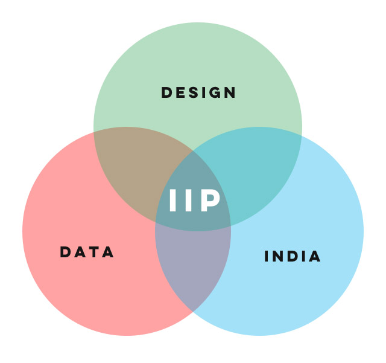

India in Pixels
IIP tells stories about India - with maps, graphs and videos. We are neither a news channel, nor a design studio. We are storytellers who use code, design and technology to tell stories about India.
India in Pixels has a niche audience that is smart, curious and savvy. There are many popular channels in India doing coding, design, data or videos. But there is just one that lies at the intersection of them all.
üöÄüöÄüöÄ to the moon!

weird flex but ok amazing flex üí™
This coder is painting detailed pictures of India using public data by Hindustan Times
This Coder is Re-imagining the Composition of India With Maps of Visual Data by News 18
Meet Ashris, The Coder Who Is Re-imagining Composition Of India With Maps Of Visual Data by Republic
Meet the Community! Ashris Choudhury, India in Pixels creator by Kontinentalist
Now that the buzz is out there and people have started recognizing us, we can start getting smart people onboard and scale things up faster. We currently have two openings.
Who are we looking for?
Your day will involve brainstorming ideas and discussing it with the team, take into account the feedback and work on ideas we find exciting. You will then spend a lot of time researching on your topic and creating an initial draft of a script that will be refined over the next few days and be ready for production. You also need to know that a script for YouTube is very different from an article on Medium - the flow, the rhythm, the style are all different.
Create a script for a YouTube video (that is approximately 4 minutes long) where you illustrate an interesting academic insight with respect to an Indian film, story, painting, song, personality or any other entity.
For example:
Notice there are two components to your script - an academic component that should involve reading up some research papers/journals on a topic like psychology, music, economy, behavior science - something most people would not be familiar with - second, something so ubiquitous we don’t even think about it - like language or a film, a mythological story, or a person, a painting, a sculpture, or an ad jingle.
Your research should show the viewer a pattern in the universe that is unexpected, novel and intriguing.
A PDF of your script, with a title - you will upload it in the Google Form below.
1st January 2022
Your final work should be narration ready. It should be an engaging conversation with a friend in a natural flow rather than a braindump of research. You are expected to use humor, anecdotes and even drama to elicit attention and interest. You will own all rights to your work and IIP will not use your work in any manner.
You can propose your desired stipend in the application link below
Who are we looking for?
Your day will involve working with narrated audio and collecting resources to use in the video. Fir each video you have to create a storyboard mentioning all videos that will be used as B-rolls. It is of extreme importance that no third party content should get us a copyright strike on YouTube. You’d then edit with the system of your choice - preferably Adobe Premiere Pro or After Effects.
You are also encouraged to make use of unconventional styles such as softwares like blender and Unity to introduce styles that are unseen in Indian YouTube.
Take any explainer video from India in Pixels or a podcast by any Indian YouTuber, just use the audio and show how you’dve edited it in your own unique style.
You will need to generate the visuals to accompany the audio. The final deliverable should be a video uploaded to Google Drive / YouTube that is 3-4 minutes long approx.
Focus on showcasing your abilities as a designer/editor to show your thinking style and craft a video that shows high quality and engagement.
A link to your video - you will enter it in the Google Form below.
1st January 2022
Your final work should be production ready. It should be ready to be uploaded on YouTube with no changes. You will own all rights to your work and IIP will not use your work in any manner.
You can propose your desired stipend in the application link below